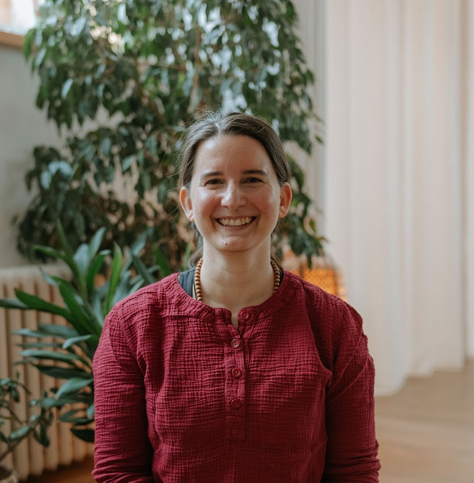
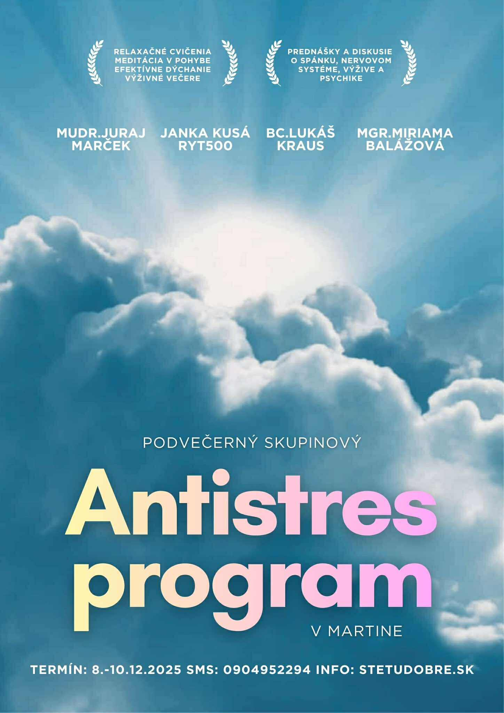
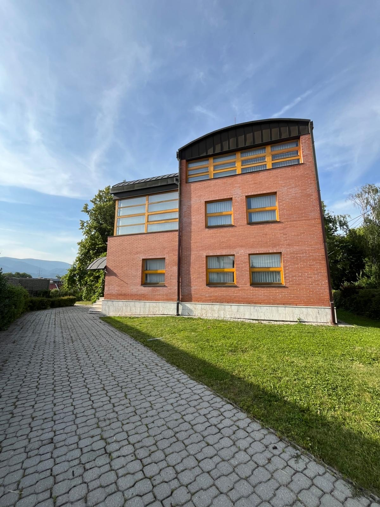
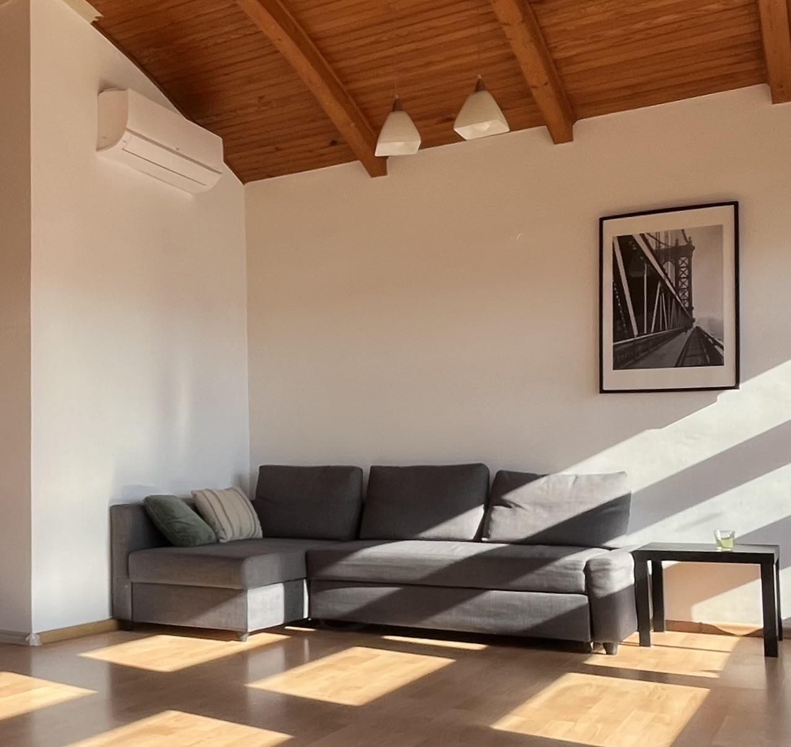
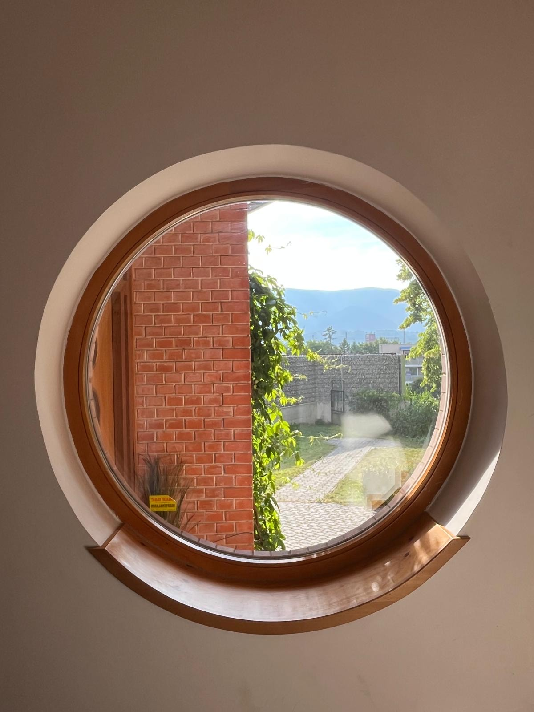

Mgr. Paulína Mináriková
Fyzioterapeutka a lektorka jogy

Môj príbeh
Fyzioterapii sa venujem už 15 rokov – najprv v nemocničnom prostredí, neskôr v ambulantnej praxi. Za ten čas som sa presvedčila, že skutočná úľava neprichádza len z odstránenia symptómu, ale z pochopenia jeho príčiny.
Preto pri práci s klientmi nehľadám len rýchle riešenie – spoločne sa pozeráme na to, ako telo funguje ako celok: ako sa hýbe, ako dýcha a ako reaguje na stres. Kombinujem poznatky z fyzioterapie, jogy, Spirálnej dynamiky a práce s nervovým systémom, aby som každému klientovi vedela ponúknuť prístup šitý na mieru.
Môj prístup
Vytváram bezpečný priestor, v ktorom sa môžete naučiť počúvať svoje telo. Pracujem citlivo, no zároveň cielene – kombinujem manuálnu terapiu, pohybové poradenstvo a techniky na prácu s nervovým systémom (TRE®, hlboká relaxácia, Rebozo).
Vzdelanie a špecializácie
Poradenstvo poskytujem aj v anglickom jazyku a online formou.
Priestor, kde pracujem
Ordinujem v budove Archa na Pribinovej 6 v Martine, v rámci tímu STETUDOBRE.SK.



